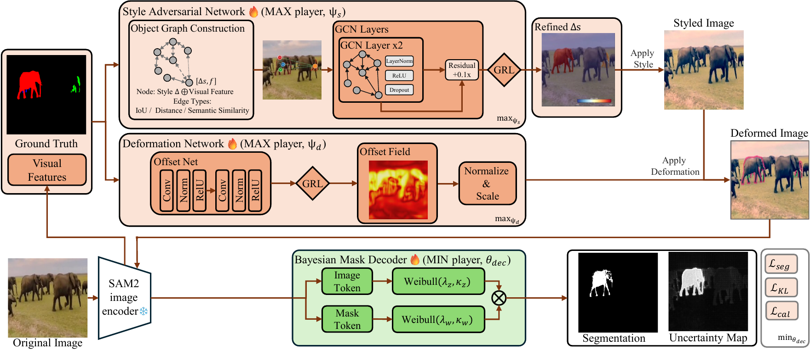
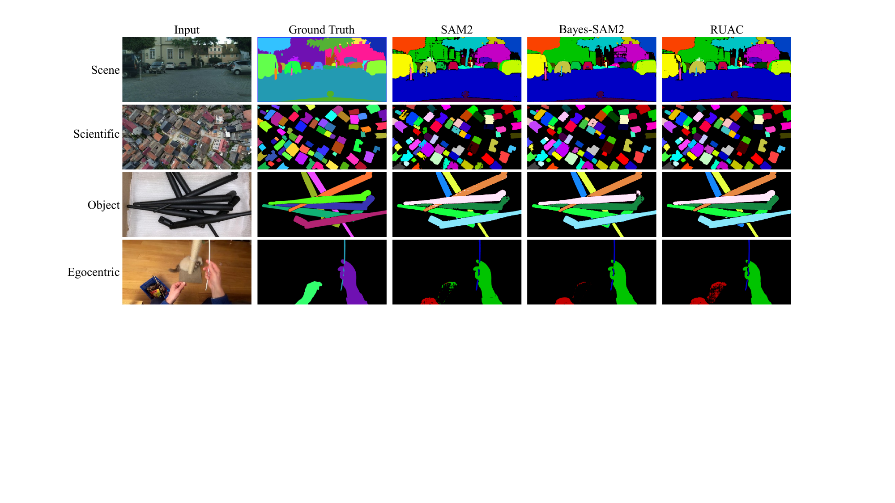
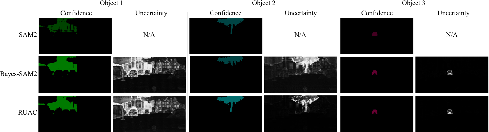

Abstract
Despite strong zero-shot performance, SAM is unreliable under domain shift due to Mask-level Confidence Confusion (MCC): a single IoU-based mask score fails to reflect pixel-wise reliability near boundaries. Motivated by the contrast between texture-biased shortcuts in neural networks and shape-centric processing in human vision, we model out-of-domain variation as appearance shifts and non-rigid deformations that jointly stress calibration. We propose Segment Anything with Robust Uncertainty-Accuracy Correlation (RUAC) for robust pixel-wise uncertainty estimation under appearance and deformation shifts. RUAC adds a lightweight uncertainty head, trains it with a collaborative style-deformation attack that jointly perturbs texture and geometry, and applies Uncertainty-Accuracy Alignment to ensure uncertainty consistently highlights erroneous pixels even under adversarial perturbations. Across 23 zero-shot domains, RUAC improves segmentation quality and yields more faithful uncertainty with stronger uncertainty-accuracy correlation.
Method

RUAC formulates training as a min-max game between two attackers and the segmentation model. The Style Adversarial Network builds an object graph from ground-truth masks and visual features, then refines per-object style statistics via GCN layers to generate semantically coherent stylized images. The Deformation Network predicts a dense offset field from SAM2 features to produce geometric perturbations. Both attackers train via Gradient Reversal Layers, enabling end-to-end optimization without a PGD-style inner loop. The Bayesian Mask Decoder uses dual-granularity Weibull distributions over image tokens (local, boundary-aware) and mask tokens (global, semantic) to model pixel-wise uncertainty, optimizing for uncertainty-accuracy alignment under these bio-inspired perturbations. Training also includes a clean branch (not shown) that maintains in-domain performance.
Results
Segmentation quality on out-of-domain inputs

From top: scene (Cityscapes), scientific (IBD aerial imagery), object (mixed industrial), and egocentric (hand-object). RUAC produces more complete masks on fine boundaries, densely-packed structures, and partially occluded objects.
Confidence and uncertainty maps

SAM2 produces confidence only (no uncertainty estimate). Bayes-SAM2 produces uncertainty but it collapses under domain shift. RUAC's uncertainty concentrates along ambiguous boundaries while leaving high-confidence interiors clean, indicating better calibration.
BibTeX
@inproceedings{ruac2026,
title = {Segment Anything with Robust Uncertainty-Accuracy Correlation},
author = {Zhou, Hongyou and Toussaint, Marc and Shao, Ling and Ye, Zihan},
booktitle = {Proceedings of the 43rd International Conference on Machine Learning},
year = {2026}
}